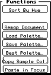

The function buttons appear in the column to the right of the palette.
Which buttons are displayed depends on whether a No Mode is selected or a
coded cel is displayed. Uncoded cels don't have available function
buttons.
Function buttons with No Mode selected
This section discusses the following function buttons:
Load Palette
Save Palette
Best Palette
Copy Sample Color
Paste in Focus

Figure 1: Function buttons with No Mode selected.
Load Palette
Lets you load a palette file saved in Macintosh or 3DO format. The new
palette appears in place of the previous palette. The system does not
automatically update or remap the document.
Save Palette
Displays a dialog box that lets you save a palette in Macintosh format if
the cel is uncoded and in 3DO format if the cel is coded.
Best Palette
If you click this button, 3DO Animator calculates the best palette for a
specific cel and type. It gives you several choices in the process.
When you click the Best Palette button, you are first prompted for the
method to process the document. You have a choice between Fast & not
Optimized and Optimized processing.
The next dialog prompts for information about the palette:
The Number of Colors region is by default set to 32, but you may need
to change it depending on the cel type you have selected. The table below
lists the number of colors you should choose for the different cel types.
Table 1: Number of colors for different cel types.
--------------------------------------------------------
Cel Type |Number of Colors
--------------------------------------------------------
Coded 16-bit |32
--------------------------------------------------------
Coded 8-bit |256 (32 + ramp)
--------------------------------------------------------
Coded 6-bit |32
--------------------------------------------------------
Coded 4-bit |16
--------------------------------------------------------
Coded 2-bit |4
--------------------------------------------------------
Method buttons let you choose how the palette is calculated.
Once you've made your selections and click the OK button, the system
calculates the palette and displays it in the Set 3DO Object Type dialog,
while simultaneously changing the document on your system.
Copy Sample Color
When you select a color from the 3DO palette and then click the Copy
Sample Color button, the color becomes current. When used in conjunction
with the Paste in Focus button, the sample color appears in the hue bar at
the top of its column.
Paste in Focus
Moves the copy of a selected sample color to the hue bar position of the
column it is in on the palette grid.
Function buttons for coded cels
Coded cels have the following additional buttons:
Sort By Hue
Update Document
Remap Document
Figure 2: Function buttons for a coded cel.
Sort By Hue
Rearranges the colors of a customized palette according to hue.
Update Document
Updates the document on the screen but does no remapping unless the
palette has fewer colors than before.
Remap Document
Maps each color in the document to the closest one in the new palette. If
the document is an animation, each frame is remapped. Remap Document
always creates a new document, with the cel type as a suffix in the
document name.